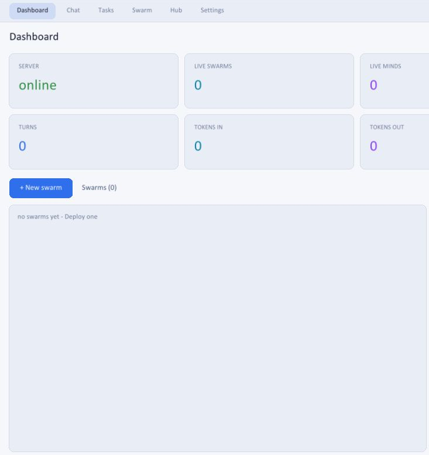

01 / DOWNLOAD & OPEN
Your desktop workspace.
Download the full desktop ZIP for your platform. Extract the whole folder.
Windows: open veil.exe.
macOS / Linux: run ./veil.
Keep bin/ and veil-install.txt beside the app.
Next → open Settings
